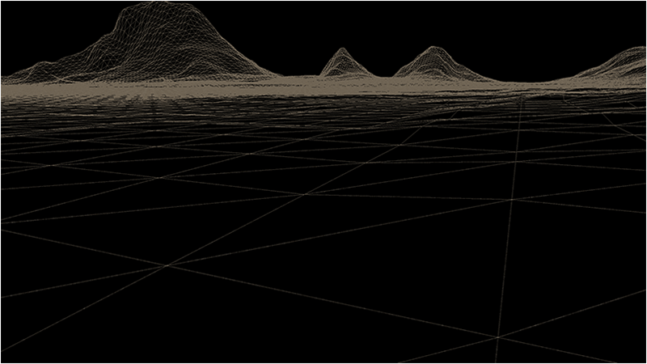
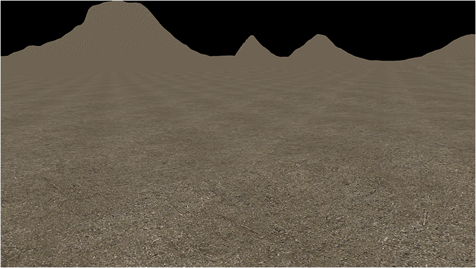
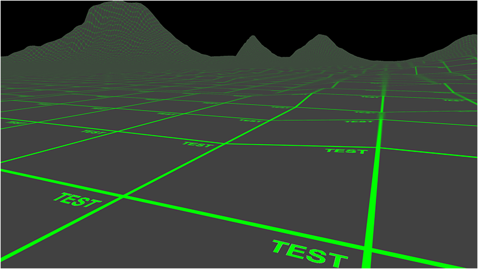

In this tutorial we will go over the basics of applying a texture to a terrain.
The code in this tutorial will be based on the previous terrain tutorial.
Texturing allows us to add very fine details to each individual quad in our 3D terrain model.
Textured terrains are generally made up of hundreds of texture images that are either painted by artists, photographs, or generated procedurally.
These texture images are then applied to each quad providing the unique visual detail required for creating highly detailed 3D terrain.
In the previous tutorial we were able to render a flat colored wire frame terrain that looked like the following:

In this tutorial we will take a single texture and apply it to all of the quads in our terrain.
And because we are using a single texture it will need to be tileable so that the edges of texture blend together seamlessly.
The texture will be a high quality 512x512 targa image so that we can have a lot of detail in each quad.
The texture that we will be using is the following:

Once we apply that texture to each individual quad we now have a textured terrain that looks like the following:

The first thing to point out is most terrains use many textures, we are just using one for this tutorial to keep it simple for learning purposes.
Secondly we can use a different resolutions for our textures, but we need to consider the quality versus performance consequences.
For example if we used a 256x256 texture we would get about a 15 percent FPS increase, but the terrain would look less crisp.
And likewise we could use 2048x2048 textures for great detail, but our FPS would suffer.
Generally, you are going to need to use the correct texture resolution to match the rest of your environment's texel density, as well as your output rendering resolution.
And the third thing to take note of is that the texture you use should map well to the unit measurement you have given each quad.
For example if each quad represents one meter then the texture that is mapped to that quad should also look like it is one meter worth of sand, grass, dirt, etc.
Now with this tutorial I also provide an important second texture called test.tga which is displayed below:
The reason this texture is important is because it allows us to quickly debug any mapping issues.
For example had we mapped the texture upside down or in reverse it would be easy to see that the word Test is not in the upper right corner of the quad.
Likewise if the color is loaded wrong or in reverse we can quickly see that.
Basically it is a great way to debug problems that may be harder to see using just a plain dirt texture.
Once mapped to the terrain it looks like the following and confirms we have mapped it correctly:

Setup.txt
We have modified the setup.txt file to specify the diffuse texture that will be used for the terrain.
Terrain Filename: ../Engine/data/heightmap.bmp
Terrain Height: 257
Terrain Width: 257
Terrain Scaling: 12.0
Diffuse Texture: ../Engine/data/textures/dirt01d.tga
Terrain.vs
We have updated the terrain shader to handle texturing now.
We basically changed the terrain shader to use the same code as the TextureShaderClass from the OpenGL 4.0 tutorials series.
////////////////////////////////////////////////////////////////////////////////
// Filename: terrain.vs
////////////////////////////////////////////////////////////////////////////////
#version 400
/////////////////////
// INPUT VARIABLES //
/////////////////////
in vec3 inputPosition;
in vec2 inputTexCoord;
//////////////////////
// OUTPUT VARIABLES //
//////////////////////
out vec2 texCoord;
///////////////////////
// UNIFORM VARIABLES //
///////////////////////
uniform mat4 worldMatrix;
uniform mat4 viewMatrix;
uniform mat4 projectionMatrix;
////////////////////////////////////////////////////////////////////////////////
// Vertex Shader
////////////////////////////////////////////////////////////////////////////////
void main(void)
{
// Calculate the position of the vertex against the world, view, and projection matrices.
gl_Position = vec4(inputPosition, 1.0f) * worldMatrix;
gl_Position = gl_Position * viewMatrix;
gl_Position = gl_Position * projectionMatrix;
// Store the texture coordinates for the pixel shader.
texCoord = inputTexCoord;
}
Terrain.ps
////////////////////////////////////////////////////////////////////////////////
// Filename: terrain.ps
////////////////////////////////////////////////////////////////////////////////
#version 400
/////////////////////
// INPUT VARIABLES //
/////////////////////
in vec2 texCoord;
//////////////////////
// OUTPUT VARIABLES //
//////////////////////
out vec4 outputColor;
///////////////////////
// UNIFORM VARIABLES //
///////////////////////
uniform sampler2D shaderTexture;
////////////////////////////////////////////////////////////////////////////////
// Pixel Shader
////////////////////////////////////////////////////////////////////////////////
void main(void)
{
vec4 textureColor;
// Sample the pixel color from the texture using the sampler at this texture coordinate location.
textureColor = texture(shaderTexture, texCoord);
outputColor = textureColor;
}
Terrainshaderclass.h
////////////////////////////////////////////////////////////////////////////////
// Filename: terrainshaderclass.h
////////////////////////////////////////////////////////////////////////////////
#ifndef _TERRAINSHADERCLASS_H_
#define _TERRAINSHADERCLASS_H_
//////////////
// INCLUDES //
//////////////
#include <iostream>
using namespace std;
///////////////////////
// MY CLASS INCLUDES //
///////////////////////
#include "openglclass.h"
////////////////////////////////////////////////////////////////////////////////
// Class name: TerrainShaderClass
////////////////////////////////////////////////////////////////////////////////
class TerrainShaderClass
{
public:
TerrainShaderClass();
TerrainShaderClass(const TerrainShaderClass&);
~TerrainShaderClass();
bool Initialize(OpenGLClass*);
void Shutdown();
bool SetShaderParameters(float*, float*, float*);
private:
bool InitializeShader(char*, char*);
void ShutdownShader();
char* LoadShaderSourceFile(char*);
void OutputShaderErrorMessage(unsigned int, char*);
void OutputLinkerErrorMessage(unsigned int);
private:
OpenGLClass* m_OpenGLPtr;
unsigned int m_vertexShader;
unsigned int m_fragmentShader;
unsigned int m_shaderProgram;
};
#endif
Terrainshaderclass.cpp
////////////////////////////////////////////////////////////////////////////////
// Filename: terrainshaderclass.cpp
////////////////////////////////////////////////////////////////////////////////
#include "terrainshaderclass.h"
TerrainShaderClass::TerrainShaderClass()
{
m_OpenGLPtr = 0;
}
TerrainShaderClass::TerrainShaderClass(const TerrainShaderClass& other)
{
}
TerrainShaderClass::~TerrainShaderClass()
{
}
bool TerrainShaderClass::Initialize(OpenGLClass* OpenGL)
{
char vsFilename[128];
char psFilename[128];
bool result;
// Store the pointer to the OpenGL object.
m_OpenGLPtr = OpenGL;
// Set the location and names of the shader files.
strcpy(vsFilename, "../Engine/terrain.vs");
strcpy(psFilename, "../Engine/terrain.ps");
// Initialize the vertex and pixel shaders.
result = InitializeShader(vsFilename, psFilename);
if(!result)
{
return false;
}
return true;
}
void TerrainShaderClass::Shutdown()
{
// Shutdown the shader.
ShutdownShader();
// Release the pointer to the OpenGL object.
m_OpenGLPtr = 0;
return;
}
bool TerrainShaderClass::InitializeShader(char* vsFilename, char* fsFilename)
{
const char* vertexShaderBuffer;
const char* fragmentShaderBuffer;
int status;
// Load the vertex shader source file into a text buffer.
vertexShaderBuffer = LoadShaderSourceFile(vsFilename);
if(!vertexShaderBuffer)
{
return false;
}
// Load the fragment shader source file into a text buffer.
fragmentShaderBuffer = LoadShaderSourceFile(fsFilename);
if(!fragmentShaderBuffer)
{
return false;
}
// Create a vertex and fragment shader object.
m_vertexShader = m_OpenGLPtr->glCreateShader(GL_VERTEX_SHADER);
m_fragmentShader = m_OpenGLPtr->glCreateShader(GL_FRAGMENT_SHADER);
// Copy the shader source code strings into the vertex and fragment shader objects.
m_OpenGLPtr->glShaderSource(m_vertexShader, 1, &vertexShaderBuffer, NULL);
m_OpenGLPtr->glShaderSource(m_fragmentShader, 1, &fragmentShaderBuffer, NULL);
// Release the vertex and fragment shader buffers.
delete [] vertexShaderBuffer;
vertexShaderBuffer = 0;
delete [] fragmentShaderBuffer;
fragmentShaderBuffer = 0;
// Compile the shaders.
m_OpenGLPtr->glCompileShader(m_vertexShader);
m_OpenGLPtr->glCompileShader(m_fragmentShader);
// Check to see if the vertex shader compiled successfully.
m_OpenGLPtr->glGetShaderiv(m_vertexShader, GL_COMPILE_STATUS, &status);
if(status != 1)
{
// If it did not compile then write the syntax error message out to a text file for review.
OutputShaderErrorMessage(m_vertexShader, vsFilename);
return false;
}
// Check to see if the fragment shader compiled successfully.
m_OpenGLPtr->glGetShaderiv(m_fragmentShader, GL_COMPILE_STATUS, &status);
if(status != 1)
{
// If it did not compile then write the syntax error message out to a text file for review.
OutputShaderErrorMessage(m_fragmentShader, fsFilename);
return false;
}
// Create a shader program object.
m_shaderProgram = m_OpenGLPtr->glCreateProgram();
// Attach the vertex and fragment shader to the program object.
m_OpenGLPtr->glAttachShader(m_shaderProgram, m_vertexShader);
m_OpenGLPtr->glAttachShader(m_shaderProgram, m_fragmentShader);
// Bind the shader input variables.
m_OpenGLPtr->glBindAttribLocation(m_shaderProgram, 0, "inputPosition");
m_OpenGLPtr->glBindAttribLocation(m_shaderProgram, 1, "inputTexCoord");
// Link the shader program.
m_OpenGLPtr->glLinkProgram(m_shaderProgram);
// Check the status of the link.
m_OpenGLPtr->glGetProgramiv(m_shaderProgram, GL_LINK_STATUS, &status);
if(status != 1)
{
// If it did not link then write the syntax error message out to a text file for review.
OutputLinkerErrorMessage(m_shaderProgram);
return false;
}
return true;
}
void TerrainShaderClass::ShutdownShader()
{
// Detach the vertex and fragment shaders from the program.
m_OpenGLPtr->glDetachShader(m_shaderProgram, m_vertexShader);
m_OpenGLPtr->glDetachShader(m_shaderProgram, m_fragmentShader);
// Delete the vertex and fragment shaders.
m_OpenGLPtr->glDeleteShader(m_vertexShader);
m_OpenGLPtr->glDeleteShader(m_fragmentShader);
// Delete the shader program.
m_OpenGLPtr->glDeleteProgram(m_shaderProgram);
return;
}
char* TerrainShaderClass::LoadShaderSourceFile(char* filename)
{
FILE* filePtr;
char* buffer;
long fileSize, count;
int error;
// Open the shader file for reading in text modee.
filePtr = fopen(filename, "r");
if(filePtr == NULL)
{
return 0;
}
// Go to the end of the file and get the size of the file.
fseek(filePtr, 0, SEEK_END);
fileSize = ftell(filePtr);
// Initialize the buffer to read the shader source file into, adding 1 for an extra null terminator.
buffer = new char[fileSize + 1];
// Return the file pointer back to the beginning of the file.
fseek(filePtr, 0, SEEK_SET);
// Read the shader text file into the buffer.
count = fread(buffer, 1, fileSize, filePtr);
if(count != fileSize)
{
return 0;
}
// Close the file.
error = fclose(filePtr);
if(error != 0)
{
return 0;
}
// Null terminate the buffer.
buffer[fileSize] = '\0';
return buffer;
}
void TerrainShaderClass::OutputShaderErrorMessage(unsigned int shaderId, char* shaderFilename)
{
long count;
int logSize, error;
char* infoLog;
FILE* filePtr;
// Get the size of the string containing the information log for the failed shader compilation message.
m_OpenGLPtr->glGetShaderiv(shaderId, GL_INFO_LOG_LENGTH, &logSize);
// Increment the size by one to handle also the null terminator.
logSize++;
// Create a char buffer to hold the info log.
infoLog = new char[logSize];
// Now retrieve the info log.
m_OpenGLPtr->glGetShaderInfoLog(shaderId, logSize, NULL, infoLog);
// Open a text file to write the error message to.
filePtr = fopen("shader-error.txt", "w");
if(filePtr == NULL)
{
cout << "Error opening shader error message output file." << endl;
return;
}
// Write out the error message.
count = fwrite(infoLog, sizeof(char), logSize, filePtr);
if(count != logSize)
{
cout << "Error writing shader error message output file." << endl;
return;
}
// Close the file.
error = fclose(filePtr);
if(error != 0)
{
cout << "Error closing shader error message output file." << endl;
return;
}
// Notify the user to check the text file for compile errors.
cout << "Error compiling shader. Check shader-error.txt for error message. Shader filename: " << shaderFilename << endl;
return;
}
void TerrainShaderClass::OutputLinkerErrorMessage(unsigned int programId)
{
long count;
FILE* filePtr;
int logSize, error;
char* infoLog;
// Get the size of the string containing the information log for the failed shader compilation message.
m_OpenGLPtr->glGetProgramiv(programId, GL_INFO_LOG_LENGTH, &logSize);
// Increment the size by one to handle also the null terminator.
logSize++;
// Create a char buffer to hold the info log.
infoLog = new char[logSize];
// Now retrieve the info log.
m_OpenGLPtr->glGetProgramInfoLog(programId, logSize, NULL, infoLog);
// Open a file to write the error message to.
filePtr = fopen("linker-error.txt", "w");
if(filePtr == NULL)
{
cout << "Error opening linker error message output file." << endl;
return;
}
// Write out the error message.
count = fwrite(infoLog, sizeof(char), logSize, filePtr);
if(count != logSize)
{
cout << "Error writing linker error message output file." << endl;
return;
}
// Close the file.
error = fclose(filePtr);
if(error != 0)
{
cout << "Error closing linker error message output file." << endl;
return;
}
// Pop a message up on the screen to notify the user to check the text file for linker errors.
cout << "Error linking shader program. Check linker-error.txt for message." << endl;
return;
}
bool TerrainShaderClass::SetShaderParameters(float* worldMatrix, float* viewMatrix, float* projectionMatrix)
{
float tpWorldMatrix[16], tpViewMatrix[16], tpProjectionMatrix[16];
int location;
// Transpose the matrices to prepare them for the shader.
m_OpenGLPtr->MatrixTranspose(tpWorldMatrix, worldMatrix);
m_OpenGLPtr->MatrixTranspose(tpViewMatrix, viewMatrix);
m_OpenGLPtr->MatrixTranspose(tpProjectionMatrix, projectionMatrix);
// Install the shader program as part of the current rendering state.
m_OpenGLPtr->glUseProgram(m_shaderProgram);
// Set the world matrix in the vertex shader.
location = m_OpenGLPtr->glGetUniformLocation(m_shaderProgram, "worldMatrix");
if(location == -1)
{
cout << "World matrix not set." << endl;
}
m_OpenGLPtr ->glUniformMatrix4fv(location, 1, false, tpWorldMatrix);
// Set the view matrix in the vertex shader.
location = m_OpenGLPtr->glGetUniformLocation(m_shaderProgram, "viewMatrix");
if(location == -1)
{
cout << "View matrix not set." << endl;
}
m_OpenGLPtr->glUniformMatrix4fv(location, 1, false, tpViewMatrix);
// Set the projection matrix in the vertex shader.
location = m_OpenGLPtr->glGetUniformLocation(m_shaderProgram, "projectionMatrix");
if(location == -1)
{
cout << "Projection matrix not set." << endl;
}
m_OpenGLPtr->glUniformMatrix4fv(location, 1, false, tpProjectionMatrix);
// Set the texture in the pixel shader to use the data from the first texture unit.
location = m_OpenGLPtr->glGetUniformLocation(m_shaderProgram, "shaderTexture");
if(location == -1)
{
cout << "Shader texture not set." << endl;
}
m_OpenGLPtr->glUniform1i(location, 0);
return true;
}
Terrainclass.h
The TerrainClass has been updated to now handle texturing.
////////////////////////////////////////////////////////////////////////////////
// Filename: terrainclass.h
////////////////////////////////////////////////////////////////////////////////
#ifndef _TERRAINCLASS_H_
#define _TERRAINCLASS_H_
//////////////
// INCLUDES //
//////////////
#include <fstream>
using namespace std;
///////////////////////
// MY CLASS INCLUDES //
///////////////////////
#include "shadermanagerclass.h"
#include "textureclass.h"
////////////////////////////////////////////////////////////////////////////////
// Class name: TerrainClass
////////////////////////////////////////////////////////////////////////////////
class TerrainClass
{
private:
struct VertexType
{
float x, y, z;
float tu, tv;
};
struct HeightMapType
{
float x, y, z;
};
struct ModelType
{
float x, y, z;
float tu, tv;
};
public:
TerrainClass();
TerrainClass(const TerrainClass&);
~TerrainClass();
bool Initialize(OpenGLClass*, char*);
void Shutdown(OpenGLClass*);
bool Render(OpenGLClass*, ShaderManagerClass*, float*, float*, float*);
private:
bool LoadSetupFile(char*, char*, float&, char*);
bool LoadBitmapHeightMap(char*);
void SetTerrainCoordinates(float);
void BuildTerrainModel();
void ReleaseHeightMap();
void ReleaseTerrainModel();
bool InitializeBuffers(OpenGLClass*);
void ShutdownBuffers(OpenGLClass*);
void RenderBuffers(OpenGLClass*);
private:
int m_vertexCount, m_indexCount;
unsigned int m_vertexArrayId, m_vertexBufferId, m_indexBufferId;
int m_terrainHeight, m_terrainWidth;
HeightMapType* m_heightMap;
ModelType* m_terrainModel;
TextureClass* m_Texture;
};
#endif
Terrainclass.cpp
///////////////////////////////////////////////////////////////////////////////
// Filename: terrainclass.cpp
///////////////////////////////////////////////////////////////////////////////
#include "terrainclass.h"
TerrainClass::TerrainClass()
{
m_heightMap = 0;
m_terrainModel = 0;
m_Texture = 0;
}
TerrainClass::TerrainClass(const TerrainClass& other)
{
}
TerrainClass::~TerrainClass()
{
}
bool TerrainClass::Initialize(OpenGLClass* OpenGL, char* setupFilename)
{
char terrainFilename[256], textureFilename[256];
float heightScale;
bool result;
The LoadSetupFile function will now also return the filename of the diffuse texture from the setup.txt file.
// Get the terrain filename, dimensions, and so forth from the setup file.
result = LoadSetupFile(setupFilename, terrainFilename, heightScale, textureFilename);
if(!result)
{
return false;
}
// Initialize the terrain height map with the data from the bitmap file.
result = LoadBitmapHeightMap(terrainFilename);
if(!result)
{
return false;
}
// Setup the X and Z coordinates for the height map as well as scale the terrain height by the height scale value.
SetTerrainCoordinates(heightScale);
// Now build the 3D model of the terrain.
BuildTerrainModel();
// We can now release the height map since it is no longer needed in memory once the 3D terrain model has been built.
ReleaseHeightMap();
// Initialize the vertex and index buffer that hold the geometry for the terrain.
result = InitializeBuffers(OpenGL);
if(!result)
{
return false;
}
// Release the terrain model now that the rendering buffers have been loaded.
ReleaseTerrainModel();
We load the diffuse texture that we will use for the terrain here.
// Create and initialize the diffuse texture object.
m_Texture = new TextureClass;
result = m_Texture->Initialize(OpenGL, textureFilename, false);
if(!result)
{
return false;
}
return true;
}
void TerrainClass::Shutdown(OpenGLClass* OpenGL)
{
We release the diffuse texture here in the Shutdown function.
// Release the diffuse texture object.
if(m_Texture)
{
m_Texture->Shutdown();
delete m_Texture;
m_Texture = 0;
}
// Release the vertex and index buffers.
ShutdownBuffers(OpenGL);
return;
}
bool TerrainClass::Render(OpenGLClass* OpenGL, ShaderManagerClass* ShaderManager, float* worldMatrix, float* viewMatrix, float* projectionMatrix)
{
bool result, wireFrame;
// Set wireframe mode off.
wireFrame = false;
// Enable wireframe mode to see triangles composing the terrain clearly.
if(wireFrame)
{
OpenGL->EnableWireframe();
}
// Set the terrain shader as the current shader program and set the matrices that it will use for rendering.
result = ShaderManager->RenderTerrainShader(worldMatrix, viewMatrix, projectionMatrix);
if(!result)
{
return false;
}
Before we render the terrain we set the diffuse texture in the terrain shader first.
// Set the diffuse texture for the terrain in the pixel shader texture unit 0.
m_Texture->SetTexture(OpenGL, 0);
// Put the vertex and index buffers on the graphics pipeline to prepare them for drawing.
RenderBuffers(OpenGL);
// Disable wireframe mode after rendering terrain.
if(wireFrame)
{
OpenGL->DisableWireframe();
}
return true;
}
bool TerrainClass::LoadSetupFile(char* filename, char* terrainFilename, float& heightScale, char* textureFilename)
{
ifstream fin;
char input;
// Open the setup file. If it could not open the file then exit.
fin.open(filename);
if(fin.fail())
{
return false;
}
// Read up to the terrain file name.
fin.get(input);
while(input != ':')
{
fin.get(input);
}
// Read in the terrain file name.
fin >> terrainFilename;
// Read up to the value of terrain height.
fin.get(input);
while(input != ':')
{
fin.get(input);
}
// Read in the terrain height.
fin >> m_terrainHeight;
// Read up to the value of terrain width.
fin.get(input);
while(input != ':')
{
fin.get(input);
}
// Read in the terrain width.
fin >> m_terrainWidth;
// Read up to the value of terrain height scaling.
fin.get(input);
while(input != ':')
{
fin.get(input);
}
// Read in the terrain height scaling.
fin >> heightScale;
We load the diffuse texture file name here from the setup.txt file.
// Read up to the texture file name.
fin.get(input);
while(input != ':')
{
fin.get(input);
}
// Read in the texture file name.
fin >> textureFilename;
// Close the setup file.
fin.close();
return true;
}
bool TerrainClass::LoadBitmapHeightMap(char* terrainFilename)
{
FILE* filePtr;
unsigned char* bitmapImage;
unsigned char fileHeader[54];
unsigned long count;
int height, width, imageSize, i, j, k, index, error;
unsigned char pixelHeight;
// Start by creating the array structure to hold the height map data.
m_heightMap = new HeightMapType[m_terrainWidth * m_terrainHeight];
// Open the bitmap map file in binary.
filePtr = fopen(terrainFilename, "rb");
if(filePtr == NULL)
{
return false;
}
// Read in the bitmap file header which is 54 bytes.
count = fread(fileHeader, sizeof(unsigned char), 54, filePtr);
if(count != 54)
{
return false;
}
// Get the width and height integers from the unsigned char header data.
height = (int)fileHeader[23];
height <<= 8;
height += (int)fileHeader[22];
width = (int)fileHeader[19];
width <<= 8;
width += (int)fileHeader[18];
// Make sure the height map dimensions are the same as the terrain dimensions for easy 1 to 1 mapping.
if((height != m_terrainHeight) || (width != m_terrainWidth))
{
return false;
}
// Calculate the size of the bitmap image data.
// Since we use non-divide by 2 dimensions (eg. 257x257) we need to add an extra byte to each line.
imageSize = m_terrainHeight * ((m_terrainWidth * 3) + 1);
// Allocate memory for the bitmap image data.
bitmapImage = new unsigned char[imageSize];
// Read in the bitmap image data.
count = fread(bitmapImage, 1, imageSize, filePtr);
if((int)count != imageSize)
{
return false;
}
// Close the file.
error = fclose(filePtr);
if(error != 0)
{
return false;
}
// Initialize the position in the image data buffer.
k=0;
// Read the image data into the height map array.
for(j=0; j<m_terrainHeight; j++)
{
for(i=0; i<m_terrainWidth; i++)
{
// Bitmaps are upside down so load bottom to top into the height map array.
index = (m_terrainWidth * (m_terrainHeight - 1 - j)) + i;
// Get the grey scale pixel value from the bitmap image data at this location.
pixelHeight = bitmapImage[k];
// Store the pixel value as the height at this point in the height map array.
m_heightMap[index].y = (float)pixelHeight;
// Increment the bitmap image data index.
k+=3;
}
// Compensate for the extra byte at end of each line in non-divide by 2 bitmaps (eg. 257x257).
k++;
}
// Release the bitmap image data now that the height map array has been loaded.
delete [] bitmapImage;
bitmapImage = 0;
return true;
}
void TerrainClass::SetTerrainCoordinates(float heightScale)
{
int i, j, index;
// Loop through all the elements in the height map array and adjust their coordinates correctly.
for(j=0; j<m_terrainHeight; j++)
{
for(i=0; i<m_terrainWidth; i++)
{
index = (m_terrainWidth * j) + i;
// Set the X and Z coordinates.
m_heightMap[index].x = (float)i;
m_heightMap[index].z = -(float)j;
// Move the terrain depth into the positive range. For example from (0, -256) to (256, 0).
m_heightMap[index].z += (float)(m_terrainHeight - 1);
// Scale the height.
m_heightMap[index].y /= heightScale;
}
}
return;
}
The BuildTerrainModel function has been modified to include texture coordinates when building the terrain model.
Each triangle in the quad requires a TU and TV coordinate for mapping textures to the triangle.
We will do a 1 to 1 mapping so the texture spans the entire quad evenly.
void TerrainClass::BuildTerrainModel()
{
int vertexCount, i, j, index, index1, index2, index3, index4;
// Calculate the number of vertices in the 3D terrain model.
vertexCount = (m_terrainHeight - 1) * (m_terrainWidth - 1) * 6;
// Create the 3D terrain model array.
m_terrainModel = new ModelType[vertexCount];
// Initialize the index into the height map array.
index = 0;
// Load the 3D terrain model with the height map terrain data.
// We will be creating 2 triangles for each of the four points in a quad.
for(j=0; j<(m_terrainHeight-1); j++)
{
for(i=0; i<(m_terrainWidth-1); i++)
{
// Get the indexes to the four points of the quad.
index1 = (m_terrainWidth * j) + i; // Upper left.
index2 = (m_terrainWidth * j) + (i+1); // Upper right.
index3 = (m_terrainWidth * (j+1)) + i; // Bottom left.
index4 = (m_terrainWidth * (j+1)) + (i+1); // Bottom right.
// Now create two triangles for that quad.
// Triangle 1 - Upper left.
m_terrainModel[index].x = m_heightMap[index1].x;
m_terrainModel[index].y = m_heightMap[index1].y;
m_terrainModel[index].z = m_heightMap[index1].z;
m_terrainModel[index].tu = 0.0f;
m_terrainModel[index].tv = 1.0f;
index++;
// Triangle 1 - Upper right.
m_terrainModel[index].x = m_heightMap[index2].x;
m_terrainModel[index].y = m_heightMap[index2].y;
m_terrainModel[index].z = m_heightMap[index2].z;
m_terrainModel[index].tu = 1.0f;
m_terrainModel[index].tv = 1.0f;
index++;
// Triangle 1 - Bottom left.
m_terrainModel[index].x = m_heightMap[index3].x;
m_terrainModel[index].y = m_heightMap[index3].y;
m_terrainModel[index].z = m_heightMap[index3].z;
m_terrainModel[index].tu = 0.0f;
m_terrainModel[index].tv = 0.0f;
index++;
// Triangle 2 - Bottom left.
m_terrainModel[index].x = m_heightMap[index3].x;
m_terrainModel[index].y = m_heightMap[index3].y;
m_terrainModel[index].z = m_heightMap[index3].z;
m_terrainModel[index].tu = 0.0f;
m_terrainModel[index].tv = 0.0f;
index++;
// Triangle 2 - Upper right.
m_terrainModel[index].x = m_heightMap[index2].x;
m_terrainModel[index].y = m_heightMap[index2].y;
m_terrainModel[index].z = m_heightMap[index2].z;
m_terrainModel[index].tu = 1.0f;
m_terrainModel[index].tv = 1.0f;
index++;
// Triangle 2 - Bottom right.
m_terrainModel[index].x = m_heightMap[index4].x;
m_terrainModel[index].y = m_heightMap[index4].y;
m_terrainModel[index].z = m_heightMap[index4].z;
m_terrainModel[index].tu = 1.0f;
m_terrainModel[index].tv = 0.0f;
index++;
}
}
return;
}
void TerrainClass::ReleaseHeightMap()
{
// Release the height map array.
if(m_heightMap)
{
delete [] m_heightMap;
m_heightMap = 0;
}
return;
}
void TerrainClass::ReleaseTerrainModel()
{
// Release the terrain model data.
if(m_terrainModel)
{
delete [] m_terrainModel;
m_terrainModel = 0;
}
return;
}
Just like the BuildTerrainModel function we have also update InitializeBuffers to include texture coordinates.
The color member was removed because the texturing handles the color for us now.
bool TerrainClass::InitializeBuffers(OpenGLClass* OpenGL)
{
VertexType* vertices;
unsigned int* indices;
int i;
// Calculate the number of vertices in the terrain.
m_vertexCount = (m_terrainHeight - 1) * (m_terrainWidth - 1) * 6;
// Set the index count to the same as the vertex count.
m_indexCount = m_vertexCount;
// Create the vertex array.
vertices = new VertexType[m_vertexCount];
// Create the index array.
indices = new unsigned int[m_indexCount];
// Load the vertex array and index array with 3D terrain model data.
for(i=0; i<m_vertexCount; i++)
{
vertices[i].x = m_terrainModel[i].x;
vertices[i].y = m_terrainModel[i].y;
vertices[i].z = m_terrainModel[i].z;
vertices[i].tu = m_terrainModel[i].tu;
vertices[i].tv = m_terrainModel[i].tv;
indices[i] = i;
}
// Allocate an OpenGL vertex array object.
OpenGL->glGenVertexArrays(1, &m_vertexArrayId);
// Bind the vertex array object to store all the buffers and vertex attributes we create here.
OpenGL->glBindVertexArray(m_vertexArrayId);
// Generate an ID for the vertex buffer.
OpenGL->glGenBuffers(1, &m_vertexBufferId);
// Bind the vertex buffer and load the vertex (position and color) data into the vertex buffer.
OpenGL->glBindBuffer(GL_ARRAY_BUFFER, m_vertexBufferId);
OpenGL->glBufferData(GL_ARRAY_BUFFER, m_vertexCount * sizeof(VertexType), vertices, GL_STATIC_DRAW);
// Enable the two vertex array attributes.
OpenGL->glEnableVertexAttribArray(0); // Vertex position.
OpenGL->glEnableVertexAttribArray(1); // Texture coordinates.
// Specify the location and format of the position portion of the vertex buffer.
OpenGL->glVertexAttribPointer(0, 3, GL_FLOAT, false, sizeof(VertexType), 0);
// Specify the location and format of the texture portion of the vertex buffer.
OpenGL->glVertexAttribPointer(1, 2, GL_FLOAT, false, sizeof(VertexType), (unsigned char*)NULL + (3 * sizeof(float)));
// Generate an ID for the index buffer.
OpenGL->glGenBuffers(1, &m_indexBufferId);
// Bind the index buffer and load the index data into it.
OpenGL->glBindBuffer(GL_ELEMENT_ARRAY_BUFFER, m_indexBufferId);
OpenGL->glBufferData(GL_ELEMENT_ARRAY_BUFFER, m_indexCount* sizeof(unsigned int), indices, GL_STATIC_DRAW);
// Now that the buffers have been loaded we can release the array data.
delete [] vertices;
vertices = 0;
delete [] indices;
indices = 0;
return true;
}
void TerrainClass::ShutdownBuffers(OpenGLClass* OpenGL)
{
// Release the vertex array object.
OpenGL->glBindVertexArray(0);
OpenGL->glDeleteVertexArrays(1, &m_vertexArrayId);
// Release the vertex buffer.
OpenGL->glBindBuffer(GL_ARRAY_BUFFER, 0);
OpenGL->glDeleteBuffers(1, &m_vertexBufferId);
// Release the index buffer.
OpenGL->glBindBuffer(GL_ELEMENT_ARRAY_BUFFER, 0);
OpenGL->glDeleteBuffers(1, &m_indexBufferId);
return;
}
void TerrainClass::RenderBuffers(OpenGLClass* OpenGL)
{
// Bind the vertex array object that stored all the information about the vertex and index buffers.
OpenGL->glBindVertexArray(m_vertexArrayId);
// Render the vertex buffer as triangles using the index buffer.
glDrawElements(GL_TRIANGLES, m_indexCount, GL_UNSIGNED_INT, 0);
return;
}
Summary
We can now render textures on our 3D terrain.
To Do Exercises
1. Recompile the code and use the input keys to move around to view the textured terrain.
2. Switch the dirt texture to the test.tga texture.
3. Create your own texture and set it to be rendered on the terrain.
4. Unlock the fps and try different resolutions of textures to see the performance and quality differences.
Source Code
Source Code and Data Files: gl4terlinux03.tar.gz